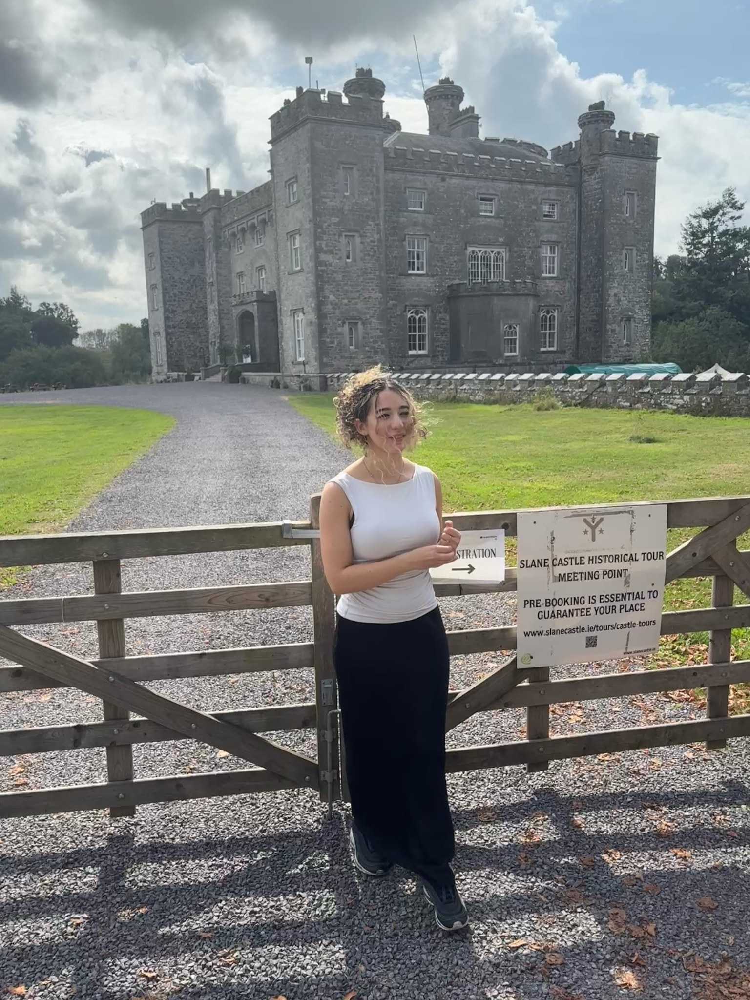

GRÁINNE POPEN / NEW YORK CITY BASED · GLOBALLY CONNECTED
Law-firm discipline Startup experience Ready to build.
I’ve worked inside international law firms, advised startup founders and helped teams adopt legal AI. I bring the legal understanding, practical delivery and founder-facing experience to connect Soxton’s product with the people who need it.
Connected through MHC’s enterprise GenAI initiatives
6 clients
Active law-firm advisory relationships at INTLDA
LOCAL PRESENCE / INTERNATIONAL EXPERIENCE
New York City based Globally connected.
My experience connects international law firms, global founder networks, frontier AI and the conversations shaping technology governance.

GLOBAL FOUNDER NETWORKS
Solana Superteam International
I worked for Solana Superteam International, an innovation network that supports and connects founders globally. My experience includes advising startups at the Castle DAO residency at Slane Castle, Ireland.
I was invited to OpenAI’s New York headquarters to test the new Astra model, bringing my legal technology perspective to emerging AI capabilities and practical legal workflows.
I participated in the United Nations Global Cooperation on AI Governance conference, engaging with the international conversation about how AI should be governed.
Supported work involving technology, privacy and regulatory questions under partner supervision.
Worked on cross-border aviation insurance litigation, including research, litigation materials, document coordination and international strategy discussions.
Delivered a firm-wide knowledge seminar on global AI acquisition trends and participated in legal technology discussions and recommendations for senior leadership.
Received a return offer following the summer programme.
What I bring to Soxton: commercial legal context, cross-border coordination and experience explaining technology to senior lawyers.
MAY–AUG 2025
Eversheds Sutherland
Summer Associate / Internship Programme Dublin
Construction & Engineering · Contentious matters
Conducted legal research, reviewed case materials and supported litigation preparation.
Co-led research on planning permission law and regulatory developments, presenting findings across practice groups.
Won the 2025 Best Speaker Award for a presentation on legal technology and AI in the global legal industry.
What I bring to Soxton: careful research and the ability to make complex legal technology accessible through presentations and founder events.
MAY–AUG 2023
Rossen Law Firm
Legal Intern Fort Lauderdale, Florida
Federal criminal law · White-collar enforcement
Prepared legal research and analyses for attorney David Tarras.
Reviewed discovery, filings and authorities to support defence strategy.
Supported case preparation, courtroom logistics and trial operations in significant criminal matters.
What I bring to Soxton: attention to evidence, sensitive information and the practical demands of supporting attorneys on consequential work.
02 / STARTUPS & THE SOLANA ECOSYSTEM
I’ve worked where founders build
I worked for Solana Superteam International, an innovation network supporting and connecting global founders. My startup experience also includes working with the Solana Dublin incubator team, advising startups at Slane Castle and supporting international growth at Fledger AI.
FEATURED EXPERIENCE / CASTLE DAO
Legal advice for startups at Slane Castle.
A two-week founders residency in Ireland, sponsored by Solana and Superteam Ireland.
I provided strategic and legal advice to startups at Castle DAO, helping founders understand the regulatory questions behind the products they wanted to build.
Advised on KYC questions across European, U.S. and Australian regulatory contexts.
Worked through EU AI Act transparency questions and cross-border considerations for product launches.
Translated legal and regulatory complexity into issues founders could consider when making product and expansion decisions.
Why this matters for Soxton: I have already brought legal guidance into a founder community. The Startup Legal Launchpad builds on that experience: meet founders where they are, provide something useful and help them identify their next legal need.
SOLANA DUBLIN / SOLATRIA
Working with an incubator team
I worked with Solana Dublin on Solatria, a Solana-native pre-seed initiative focused on frontier AI and blockchain. My work included legal and regulatory strategy around autonomous agents, attribution and on-chain compliance.
For Soxton: familiarity with early-stage technology teams and the point where product design, regulation and commercial ambition meet.
FLEDGER AI / APR 2024–MAY 2025
Supporting international growth
As AI Market Lead in The Hague, I supported U.S. expansion research, assessed AI regulatory requirements and legal workflows, explored potential law-firm partnerships and contributed to human-in-the-loop governance processes. I also represented the company at international legal technology events, including Legal Geek.
For Soxton: experience connecting market entry, product relevance, partnerships and responsible AI deployment.
FOUNDER FEEDBACK / CASTLE DAO AT SLANE CASTLE
What do actual founders have to say about my impact?
A public reflection from Aniket Kumar, a Castle DAO participant building KnowRight, on our conversation about KYC, privacy-enhancing technologies and the EU AI Act.
“
Her suggestions left me thinking more seriously about building KnowRight with the same focus on regulations as I put on building robust technology and seamless user experience.
Aniket Kumar Building KnowRight · Castle DAO participant LinkedIn post about the Slane Castle residency
THE VALUE I BRING
I help founders connect legal and regulatory questions to the product decisions in front of them. That is the kind of practical, trusted relationship I would build for Soxton.
I’ve evaluated legal AI, supported implementation across offices and helped lawyers understand how to use it responsibly.
MASON HAYES & CURRAN
Legal Solutions Analyst
March–August 2026 · New York & Dublin
Coordinated enterprise GenAI initiatives across New York, San Francisco, London and Dublin.
Evaluated outputs for legal accuracy, reasoning, contextual nuance and practical value.
Assessed Claude, Harvey, Legora, Microsoft Copilot and Gemini across research, drafting and workflow use cases.
Developed evaluation frameworks, guidance and knowledge resources to support attorney adoption.
For Soxton: structured evaluation, reliable handoffs and practical enablement that connects the product to real work.
INTLDA
AI Governance Consultant
January 2026–present · New York
Manage advisory relationships with six active law-firm clients.
Help teams evaluate legal AI use cases and resolve implementation questions.
Present on ABA Formal Opinion 512, professional responsibility and the impact of AI efficiencies on legal billing.
Translate governance expectations into practical guidance for responsible adoption.
For Soxton: credibility in attorney conversations, client communication and the ability to explain AI oversight clearly.
Additional market and policy experience +
United States Artificial Intelligence Institute
AI Market Lead · August–November 2025. Researched legal market trends and technology adoption, and prepared briefings and legal analyses for law firms, public-sector organizations and industry stakeholders.
04 / BUILDING, TESTING & EXPLAINING
I make the work concrete
Selected projects and experiences that show how I approach a new problem: understand the task, build something useful, test it and explain what it can do.
LEGAL WORKFLOWS
Harvey, Legora & Wordsmith AI
Built legal agents, including an NDA triage and review workflow that distinguishes new requests, counterparty agreements and matters needing clarification. Applied a review playbook with defined issues and attorney checkpoints.
Invited to OpenAI’s New York headquarters to test the new Astra model and explore legal workflows, applying my interest in legal reasoning, usability and evaluation to emerging AI capabilities.
SECURITY & PRIVACY
Pivot & privacy-enhancing AI
Created a post-quantum security concept for digital finance at the Dogpatch Labs quantum hackathon. Worked with privacy-enhancing technologies for generative AI at Queen’s University Belfast.
AGENT SAFETY
Threat detection & CocoDev
Built a prototype addressing attempts to extract personal data from language models. Coordinated compliance and safety prompts for an agentic coding companion at the National AI Challenge.
05 / THE FOUNDATION
Legal training International perspective
A legal education across Ireland and the Netherlands, professional experience spanning Europe and the U.S., and a record of communicating complex ideas.
EDUCATION
UCD & Utrecht
BCL in Law with Social Justice, University College Dublin, 2025. Awarded a full Global Excellence Scholarship and served as a UCD ambassador for North America. Completed an academic exchange year at Utrecht University focused on technology and international law.
Passed all eight FE-1 solicitor entrance examinations in 2026.
COMMUNICATION & RESEARCH
Making ideas understandable
Eversheds Sutherland Best Speaker Award, 2025; Academic All-American in debate, 2021. Publications include “Ireland’s Cyber Contradictions” in the UCD Law Review and “Digital Amnesia.”
Firm-wide presentations, client meetings and founder discussions are part of how I turn research into something people can use.
PUBLIC POLICY
Working across stakeholders
Worked with March for Our Lives in Washington, D.C., on legislative research, policy briefs and engagement with lawmakers during the 2022 effort to pass the Bipartisan Safer Communities Act.
Participant at the United Nations Global Cooperation on AI Governance conference, joining discussions on the international governance of AI.
THE ROLE I WOULD OWN
Legal Technologist Founder Adoption & GTM
I would bring this experience together at Soxton: earn founder trust, build useful events and resources, improve the journey from interest to legal support, and turn international demand into a measurable growth plan.